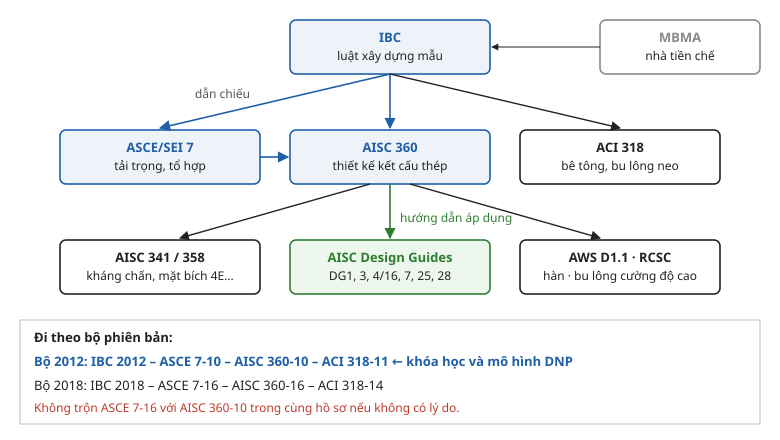

Bài 8.1. IBC – ASCE – AISC IBC, ASCE 7 and AISC 360: the US code family
Thiết kế nhà khung thép theo tiêu chuẩn Mỹ không dùng một văn bản duy nhất mà dùng cả một hệ: luật xây dựng mẫu IBC dẫn chiếu tiêu chuẩn tải trọng, tiêu chuẩn thép, bê tông, hàn và bu lông. Bài này giới thiệu vai trò từng văn bản và điều kiện để áp dụng chúng ở Việt Nam.
- Nêu được vai trò của IBC, ASCE 7, AISC 360, AISC 341, AISC 358, ACI 318, AWS D1.1, RCSC và các Design Guide.
- Chọn đúng bộ phiên bản đồng bộ và biết điều kiện pháp lý khi dùng tiêu chuẩn nước ngoài tại Việt Nam.
1. Tình huống
Nhà máy Đức Nhuận Phát (DNP) ở Quảng Ninh có nhịp 54 m, dài 60 m, bước khung 12 m, có cầu trục; chủ đầu tư nước ngoài yêu cầu thiết kế theo tiêu chuẩn Mỹ. Mô hình SAP2000 NM DNP-21.04 dùng AISC 360-10 và ASCE 7-10. Trước khi tính, kỹ sư phải lập Tiêu chí thiết kế ghi rõ phiên bản từng văn bản, và lấy số liệu gió, động đất từ QCVN 02:2022 vì quy chuẩn là bắt buộc.

2. Nội dung chính
Cấu trúc hệ tiêu chuẩn
| Cấp | Văn bản | Nội dung chính trong giáo trình |
|---|---|---|
| Luật xây dựng (model code) | IBC (International Building Code) | Dẫn chiếu các tiêu chuẩn dưới đây. Bảng 1604.3 giới hạn độ võng (Chương 14). Bảng 1604.5 phân loại rủi ro |
| Tải trọng | ASCE/SEI 7 (Minimum Design Loads) | Tổ hợp tải (Chương 2), hoạt tải (Chương 4), gió (Chương 26–31), động đất (Chương 11–12), cầu trục (4.9) |
| Thép | AISC 360 (Specification for Structural Steel Buildings) | Phân tích ổn định (Chương C, Phụ lục 7), cấu kiện (D–H), liên kết (J) |
| Thép – kháng chấn | AISC 341 (Seismic Provisions) | Bắt buộc khi $R > 3$ (Chương 10) |
| Liên kết kháng chấn | AISC 358 (Prequalified Connections) | Liên kết mặt bích 4E/8ES… (Chương 15) |
| Bê tông, neo | ACI 318 | Bu lông neo (Phụ lục D hoặc Chương 17), móng |
| Hàn | AWS D1.1 | Quy trình hàn, kiểm tra chất lượng |
| Bu lông | RCSC Specification | Lắp đặt, siết bu lông cường độ cao |
| Hướng dẫn | AISC Design Guides | DG1 (chân cột), DG3 (điều kiện sử dụng), DG4/16 (mặt bích), DG7 (cầu trục), DG25 (tiết diện thay đổi), DG28 (phân tích ổn định) |
| Nhà kim loại | MBMA Metal Building Systems Manual | Hệ số khí động, tổ hợp cho nhà tiền chế |
Bảng 8.1. Hệ thống tiêu chuẩn Mỹ dùng trong giáo trình
Phiên bản theo bộ. IBC 2012 đi cùng ASCE 7-10, AISC 360-10 và ACI 318-11. IBC 2018 đi cùng ASCE 7-16, AISC 360-16 và ACI 318-14. Khóa học và mô hình DNP dùng AISC 360-10 + ASCE 7-10. Giáo trình theo bộ này và ghi chú khác biệt của bản -16 trong các khung "Lưu ý". Không nên trộn ASCE 7-16 với AISC 360-10 trong cùng hồ sơ nếu không có lý do.
Điều kiện pháp lý
- Theo pháp luật xây dựng Việt Nam, quy chuẩn kỹ thuật quốc gia (QCVN) là bắt buộc. Tiêu chuẩn (TCVN hoặc nước ngoài) được lựa chọn áp dụng và phải được người quyết định đầu tư chấp thuận. Khi áp dụng tiêu chuẩn nước ngoài, phải bảo đảm sự đồng bộ của cả hệ tiêu chuẩn và không trái với QCVN.
- Do đó số liệu khí hậu, động đất phải lấy từ QCVN 02:2022 rồi quy đổi. Không lấy vận tốc gió từ nguồn khác.
- Hồ sơ nên có Tiêu chí thiết kế (Design Criteria) liệt kê: phiên bản IBC/ASCE/AISC, Risk Category, $V$, Exposure, $L_r$, giới hạn sử dụng, vật liệu, phương pháp phân tích (DM hay ELM), LRFD/ASD.
3. Lỗi thường gặp
- Trộn phiên bản: lấy tải trọng theo ASCE 7-16 nhưng kiểm tra cấu kiện theo AISC 360-10 mà không có lý do và không ghi trong Tiêu chí thiết kế.
- Lấy vận tốc gió, gia tốc nền từ nguồn nước ngoài thay vì quy đổi từ QCVN 02:2022.
4. Luyện tập
Văn bản nào quy định tổ hợp tải trọng và tải gió trong hệ tiêu chuẩn Mỹ?
Gợi ý
Xem cấp "Tải trọng" trong Bảng 8.1.
Lời giải
ASCE 7: tổ hợp (Chương 2), hoạt tải (Chương 4), gió (Chương 26–31), động đất (Chương 11–12). AISC 360 là tiêu chuẩn kiểm tra cấu kiện thép.
Một hồ sơ ghi "theo IBC 2018". Bộ tiêu chuẩn đồng bộ đi kèm là:
Gợi ý
Mỗi phiên bản IBC dẫn chiếu một bộ phiên bản cố định.
Lời giải
IBC 2018 đi cùng ASCE 7-16, AISC 360-16 và ACI 318-14; IBC 2012 đi cùng ASCE 7-10, AISC 360-10, ACI 318-11.
Nhà xưởng dùng hệ khung chịu mô men có hệ số $R = 3{,}5$, liên kết kèo – cột bằng mặt bích 4E. Ngoài AISC 360, cần thêm văn bản nào cho phần kháng chấn?
Gợi ý
So sánh $R$ với ngưỡng 3 trong Bảng 8.1.
Lời giải
$R = 3{,}5 > 3$ → bắt buộc AISC 341; liên kết 4E là liên kết kháng chấn chứng nhận trước, tra AISC 358.
- IBC dẫn chiếu ASCE 7 (tải trọng), AISC 360/341/358 (thép), ACI 318 (bê tông, neo), AWS D1.1 (hàn), RCSC (bu lông).
- Giáo trình dùng bộ IBC 2012 – ASCE 7-10 – AISC 360-10; không trộn với bản -16.
- QCVN là bắt buộc; tiêu chuẩn Mỹ được chọn áp dụng khi chủ đầu tư chấp thuận và phải ghi trong Tiêu chí thiết kế.